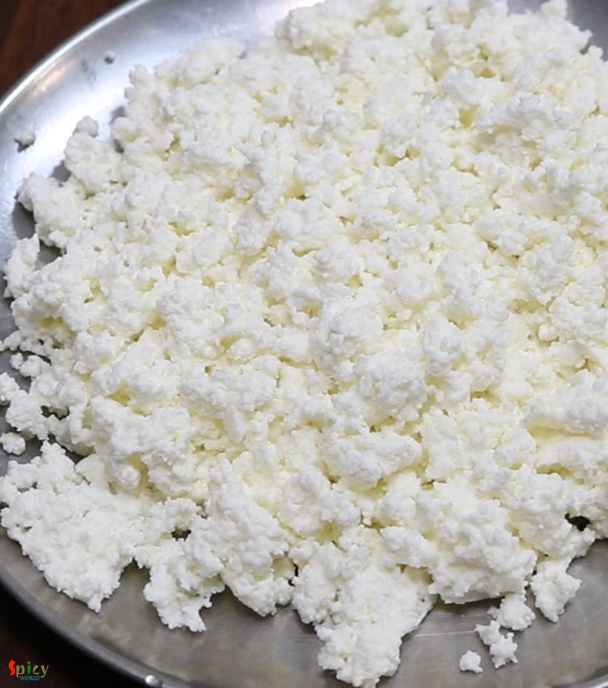
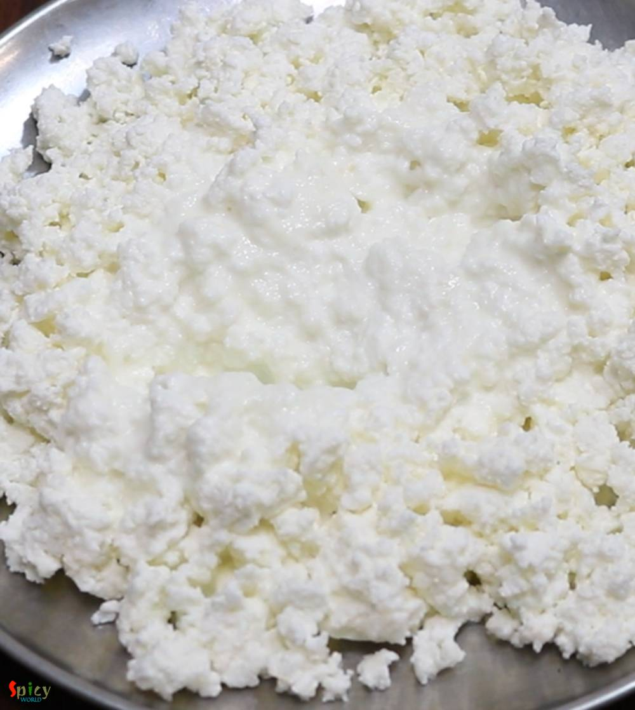
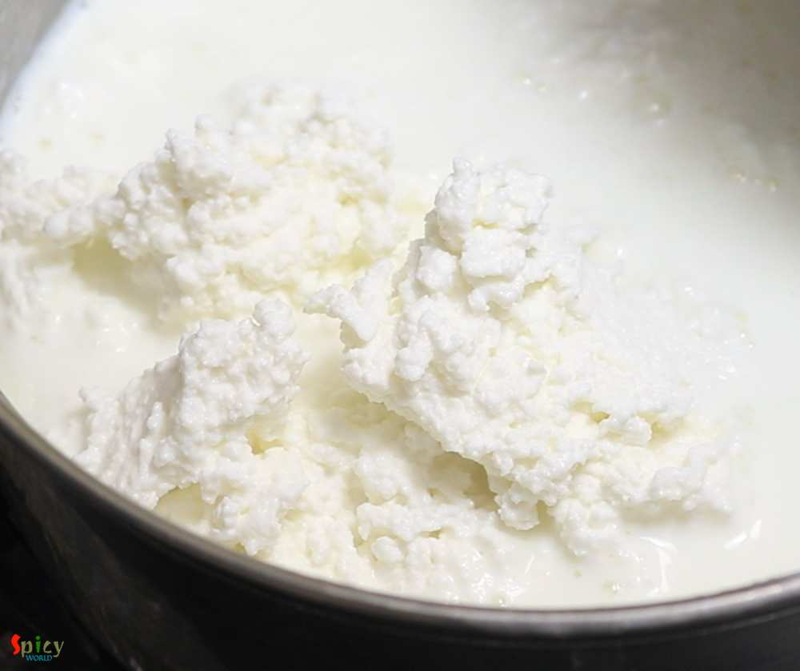
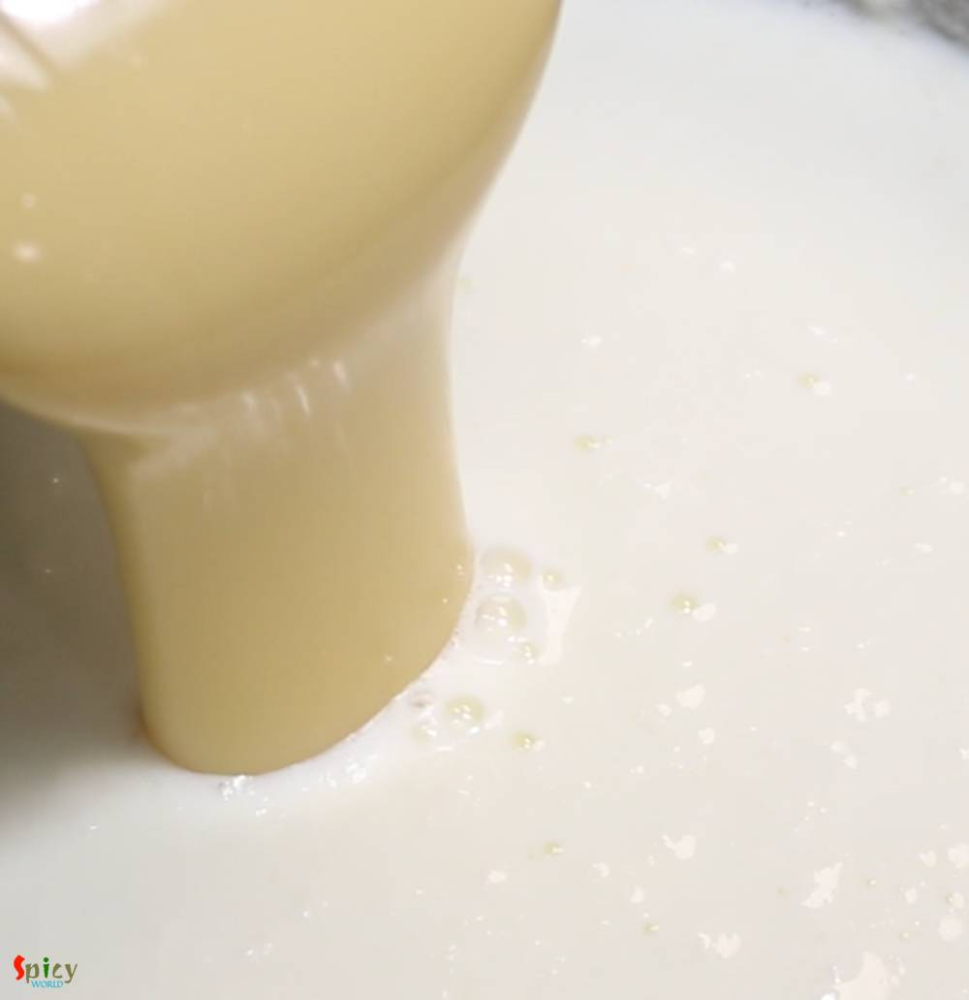
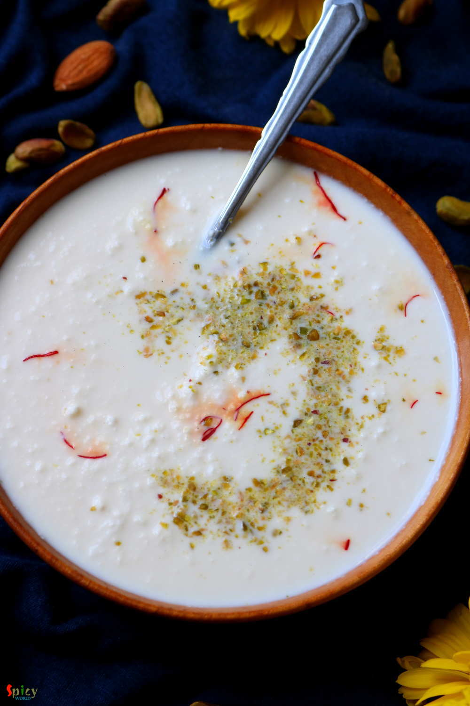

Simple and Easy Recipes
Chanar Payesh / Paneer Kheer
© 2016 Spicy World, Published on: Apr 2, 2019
Chanar Payesh is a traditional Bengali dessert recipe in which soft, crumbled panner will be cooked in semi thickened milk along with condensed milk and green cardamom. The texture of Chanar Payesh is very important - neither too thick nor too thin. In one word this Payesh tastes delicious and more over it is very easy to make. During summer, when you want to make some cold, lightly sweetened dessert for any occasion or party, then Chanar Payesh is the best option as it takes very less time to cook than other typical desserts.

Ingredients
- Paneer or Chana from 1 and half liters of milk.
- 4 Tablespoons of condensed milk or 1/4th cup of sugar.
- 1 liter of full fat milk.
- 2 pieces of green cardamom.
- 1 Tablespoon of chopped pistachios.
- Saffron - 8-10 pieces


Steps
Heat full fat milk in a sauce pan.
On medium heat stir often and boil until the milk becomes half of its quantity.
Now take the paneer in a plate and crumble it with your hand. Do not make it very smooth.
You can use home made paneer or store bought one for this recipe. Just make sure that the paneer should be dry. Otherwise milk will get curdled.
For the safety, add 3-4 Tablespoons of hot milk in crumbled paneer, mix well.
Now add the entire paneer into the reduced milk, mix well.
Then add the condensed milk and green cardamom, mix well and cook on low flame for 10-12 minutes.
When the kheer will become semi thick, turn off the heat. Do make it very thick like Rice kheer.
Let it come to room temperature, then keep it in fridge for 1 hour.
Before serving, garnish it with chopped pistachio.
Your chanar payesh is ready to serve.
Serve it chilled ...
")